Hands-on labs for test reports in TypeScript, JavaScript, Python and Java: built-in reporters and JUnit XML, HTML reports with screenshots and traces, Allure in every language, ExtentReports, your own reporter, and merged reports in CI.
A report is the record of a test run. Machines read the XML to count passes and failures, and people open the HTML report to see the error, the screenshot and the trace of a failed test.
A report tells people and machines what happened in a test run: which tests ran, which failed, why, and how long it took. Different readers want different things, so a run usually writes several reports at once.
| Reader | Wants | Report |
|---|---|---|
| you, at the terminal | pass or fail, right now | list, line or dot in Playwright Test, -v or -q in pytest, the Surefire summary in Maven |
| the CI server | counts and history | JUnit XML, which every CI server reads |
| a tester fixing a failure | the error, the screenshot, the trace | the Playwright HTML report, pytest-html, Allure, ExtentReports |
| a manager | a dashboard: how many passed, trends, which features | Allure, ExtentReports |
| your own tools | data in a known shape | JSON, or a custom reporter |
Every runner has reporters built in. Start with the ones that need nothing installed.
| Playwright Test reporter | What it gives |
|---|---|
| list | one line per test, the default on a laptop |
| line | one line that updates, and failures in full |
| dot | one character per test, for long runs on CI |
| html | a web page with every test, its steps, screenshots, videos and traces |
| json | all results as JSON, for your own tools |
| junit | JUnit XML for CI servers |
| blob | raw results of one shard, merged later with merge-reports |
| github | error notes on the right lines of a GitHub pull request |
Maven Surefire prints a summary and always writes XML files to target/surefire-reports. TestNG adds its own testng-results.xml.In pytest the terminal output is set with -v, -q and -rA, and --junitxml writes JUnit XML.Choose reporters with --reporter or in the config. Output files are set with options or environment variables such as PLAYWRIGHT_JUNIT_OUTPUT_NAME.Choose reporters with --reporter or in the config. Output files are set with options or environment variables such as PLAYWRIGHT_JUNIT_OUTPUT_NAME.
package com.brainy.shop.tests.products; import com.brainy.shop.base.BaseTest; import com.brainy.shop.data.Product; import org.testng.annotations.Test; import static com.microsoft.playwright.assertions.PlaywrightAssertions.assertThat; public class PriceTest extends BaseTest { // Out of date on purpose: the lamp now costs ₹1,299, so the reports have a failure to show @Test public void theDeskLampCosts1199() { productsPage.open(); assertThat(productsPage.card(Product.DESK_LAMP.label).price).hasText("₹1,199"); } }
$ mvn test; grep -o '<testsuite [^>]*>' target/surefire-reports/TEST-TestSuite.xml
[INFO] ------------------------------------------------------- [INFO] T E S T S [INFO] ------------------------------------------------------- [INFO] Running TestSuite [ERROR] Tests run: 8, Failures: 1, Errors: 0, Skipped: 0, Time elapsed: 14.38 s <<< FAILURE! -- in TestSuite [ERROR] com.brainy.shop.tests.products.PriceTest.theDeskLampCosts1199 -- Time elapsed: 1.434 s <<< FAILURE! org.opentest4j.AssertionFailedError: Locator expected to have text Expected: ₹1,199 Received: ₹1,299 [INFO] [INFO] Results: [INFO] [ERROR] Failures: [ERROR] PriceTest.theDeskLampCosts1199:14 Locator expected to have text Expected: ₹1,199 Received: ₹1,299 [INFO] [ERROR] Tests run: 8, Failures: 1, Errors: 0, Skipped: 0 [INFO] [INFO] ------------------------------------------------------------------------ [INFO] BUILD FAILURE <testsuite xmlns:xsi="http://www.w3.org/2001/XMLSchema-instance" xsi:noNamespaceSchemaLocation="https://maven.apache.org/surefire/maven-surefire-plugin/xsd/surefire-test-report.xsd" version="3.0.2" name="TestSuite" time="14.382" tests="8" errors="0" skipped="0" failures="1">
from playwright.sync_api import expect from framework.data.products import DESK_LAMP from framework.pages.products_page import ProductsPage # Out of date on purpose: the lamp now costs ₹1,299, so the reports have a failure to show def test_the_desk_lamp_costs_1199(products_page: ProductsPage): products_page.open() expect(products_page.card(DESK_LAMP.name).price).to_have_text("₹1,199")
$ pytest -q --tb=line --junitxml=results/junit.xml; grep -o '<testsuite [^>]*>' results/junit.xml
..F..... [100%]
=================================== FAILURES ===================================
E AssertionError: Locator expected to have text '₹1,199'
Actual value: ₹1,299
Call log:
- Expect "to_have_text" get_by_role("list", name="Products").get_by_role("listitem").filter(has=get_by_role("heading", name="Desk lamp")).locator(".price") with timeout 5000ms
- waiting for get_by_role("list", name="Products").get_by_role("listitem").filter(has=get_by_role("heading", name="Desk lamp")).locator(".price")
8 × locator resolved to <span class="price">₹1,299</span>
- unexpected value "₹1,299"
Aria snapshot:
- text: ₹1,299
tests/products/test_price.py:10: AssertionError: Locator expected to have text '₹1,199'
=========================== short test summary info ============================
FAILED tests/products/test_price.py::test_the_desk_lamp_costs_1199[chromium] - AssertionError: Locator expected to have text '₹1,199'
1 failed, 7 passed in 17.42s
<testsuite name="pytest" errors="0" failures="1" skipped="0" tests="8" time="17.422" timestamp="2026-10-27T14:56:46.823248+00:00" hostname="vm">import { test, expect } from '../../src/fixtures/index.js'; import { products } from '../../src/data/products.js'; // Out of date on purpose: the lamp now costs ₹1,299, so the reports have a failure to show test('the desk lamp costs ₹1,199', async ({ productsPage }) => { await productsPage.open(); await expect(productsPage.card(products.deskLamp.name).price).toHaveText('₹1,199'); });
$ PLAYWRIGHT_JSON_OUTPUT_NAME=results/results.json PLAYWRIGHT_JUNIT_OUTPUT_NAME=results/junit.xml npx playwright test --reporter=dot,json,junit; grep -o '<testsuites [^>]*>' results/junit.xml; node -p "JSON.stringify(require('./results/results.json').stats)"Running 8 tests using 2 workers
······F·
1) [chromium] › tests/products/price.spec.js:5:1 › the desk lamp costs ₹1,199 ────────────────────
Error: expect(locator).toHaveText(expected) failed
Locator: getByRole('list', { name: 'Products' }).getByRole('listitem').filter({ has: getByRole('heading', { name: 'Desk lamp' }) }).locator('.price')
Expected: "₹1,199"
Received: "₹1,299"
Timeout: 5000ms
at tests/products/price.spec.js:7:65
attachment #1: screenshot (image/png) ──────────────────────────────────────────────────────────
test-results/products-price-the-desk-lamp-costs-₹1-199-chromium/test-failed-1.png
────────────────────────────────────────────────────────────────────────────────────────────────
attachment #2: video (video/webm) ──────────────────────────────────────────────────────────────
test-results/products-price-the-desk-lamp-costs-₹1-199-chromium/video.webm
────────────────────────────────────────────────────────────────────────────────────────────────
1 failed
[chromium] › tests/products/price.spec.js:5:1 › the desk lamp costs ₹1,199 ─────────────────────
7 passed (10.9s)
<testsuites id="" name="" tests="8" failures="1" skipped="0" errors="0" time="10.906714">
{"startTime":"2026-10-27T14:56:48.399Z","duration":10906.714,"expected":7,"skipped":0,"unexpected":1,"flaky":0}import { test, expect } from '../../src/fixtures/index'; import { products } from '../../src/data/products'; // Out of date on purpose: the lamp now costs ₹1,299, so the reports have a failure to show test('the desk lamp costs ₹1,199', async ({ productsPage }) => { await productsPage.open(); await expect(productsPage.card(products.deskLamp.name).price).toHaveText('₹1,199'); });
$ PLAYWRIGHT_JSON_OUTPUT_NAME=results/results.json PLAYWRIGHT_JUNIT_OUTPUT_NAME=results/junit.xml npx playwright test --reporter=dot,json,junit; grep -o '<testsuites [^>]*>' results/junit.xml; node -p "JSON.stringify(require('./results/results.json').stats)"Running 8 tests using 2 workers
······F·
1) [chromium] › tests/products/price.spec.ts:5:1 › the desk lamp costs ₹1,199 ────────────────────
Error: expect(locator).toHaveText(expected) failed
Locator: getByRole('list', { name: 'Products' }).getByRole('listitem').filter({ has: getByRole('heading', { name: 'Desk lamp' }) }).locator('.price')
Expected: "₹1,199"
Received: "₹1,299"
Timeout: 5000ms
at tests/products/price.spec.ts:7:65
attachment #1: screenshot (image/png) ──────────────────────────────────────────────────────────
test-results/products-price-the-desk-lamp-costs-₹1-199-chromium/test-failed-1.png
────────────────────────────────────────────────────────────────────────────────────────────────
attachment #2: video (video/webm) ──────────────────────────────────────────────────────────────
test-results/products-price-the-desk-lamp-costs-₹1-199-chromium/video.webm
────────────────────────────────────────────────────────────────────────────────────────────────
1 failed
[chromium] › tests/products/price.spec.ts:5:1 › the desk lamp costs ₹1,199 ─────────────────────
7 passed (12.4s)
<testsuites id="" name="" tests="8" failures="1" skipped="0" errors="0" time="12.391974">
{"startTime":"2026-10-27T14:56:52.401Z","duration":12391.974,"expected":7,"skipped":0,"unexpected":1,"flaky":0}One test now fails on purpose: the lamp costs ₹1,299, not ₹1,199. Every runner printed a short result for people and wrote JUnit XML for machines. The XML line is what Jenkins, GitLab and Azure DevOps read to count passed and failed tests: eight tests, one failure. Playwright Test also wrote JSON, whose stats say 7 expected and 1 unexpected. Several reporters can run at once, here dot, json and junit.
An HTML report is what a tester opens first. A good one shows the error, a screenshot taken at the moment of failure, and a link to the trace.
package com.brainy.shop.reporting; import com.aventstack.extentreports.ExtentReports; import com.aventstack.extentreports.ExtentTest; import com.aventstack.extentreports.MediaEntityBuilder; import com.aventstack.extentreports.reporter.ExtentSparkReporter; import org.testng.IReporter; import org.testng.ISuite; import org.testng.ITestResult; import org.testng.xml.XmlSuite; import java.util.ArrayList; import java.util.Base64; import java.util.Comparator; import java.util.Date; import java.util.List; // TestNG calls generateReport once, after the whole suite. It writes target/extent/index.html public class ExtentReporter implements IReporter { @Override public void generateReport(List<XmlSuite> xmlSuites, List<ISuite> suites, String outputDirectory) { ExtentSparkReporter spark = new ExtentSparkReporter("target/extent/index.html"); spark.config().setDocumentTitle("Brainy Shop tests"); spark.config().setReportName("Brainy Shop, nightly run"); ExtentReports extent = new ExtentReports(); extent.attachReporter(spark); extent.setSystemInfo("Browser", "Chromium"); List<ITestResult> all = new ArrayList<>(); for (ISuite suite : suites) { suite.getResults().values().forEach(r -> { all.addAll(r.getTestContext().getPassedTests().getAllResults()); all.addAll(r.getTestContext().getFailedTests().getAllResults()); all.addAll(r.getTestContext().getSkippedTests().getAllResults()); }); } all.sort(Comparator.comparingLong(ITestResult::getStartMillis)); for (ITestResult result : all) add(extent, result); extent.flush(); } private void add(ExtentReports extent, ITestResult result) { ExtentTest test = extent.createTest(result.getMethod().getMethodName()) .assignCategory(result.getTestClass().getRealClass().getSimpleName()); for (String group : result.getMethod().getGroups()) test.assignCategory(group); test.getModel().setStartTime(new Date(result.getStartMillis())); // the real times, not the report time test.getModel().setEndTime(new Date(result.getEndMillis())); switch (result.getStatus()) { case ITestResult.SUCCESS -> test.pass("Passed"); case ITestResult.SKIP -> test.skip("Skipped"); default -> { test.fail(result.getThrowable()); if (result.getAttribute("screenshot") instanceof byte[] png) { String base64 = Base64.getEncoder().encodeToString(png); test.fail("Screenshot at failure", MediaEntityBuilder.createScreenCaptureFromBase64String(base64).build()); } } } } }
package com.brainy.shop.reporting; import com.brainy.shop.base.BaseTest; import org.testng.ITestListener; import org.testng.ITestResult; // TestNG calls onTestFailure while the page is still open, so the screenshot shows the failure public class EvidenceListener implements ITestListener { @Override public void onTestFailure(ITestResult result) { if (result.getInstance() instanceof BaseTest test) { result.setAttribute("screenshot", test.screenshot()); // ExtentReporter reads it at the end } } }
<!DOCTYPE suite SYSTEM "https://testng.org/testng-1.0.dtd"> <!-- Every test, two classes at a time. Each class gets its own browser on its own thread. --> <suite name="Brainy Shop" parallel="classes" thread-count="2"> <listeners> <listener class-name="com.brainy.shop.reporting.EvidenceListener"/> <listener class-name="com.brainy.shop.reporting.ExtentReporter"/> </listeners> <test name="All tests"> <packages> <package name="com.brainy.shop.tests.*"/> </packages> </test> </suite>
<project xmlns="http://maven.apache.org/POM/4.0.0"> <modelVersion>4.0.0</modelVersion> <groupId>com.brainy</groupId> <artifactId>shop-tests</artifactId> <version>1.0.0</version> <properties> <maven.compiler.release>21</maven.compiler.release> <project.build.sourceEncoding>UTF-8</project.build.sourceEncoding> <suite>testng.xml</suite> <!-- mvn test -Dsuite=testng-smoke.xml runs another suite --> </properties> <dependencies> <dependency> <groupId>com.microsoft.playwright</groupId> <artifactId>playwright</artifactId> <version>1.63.0</version> </dependency> <dependency> <groupId>org.testng</groupId> <artifactId>testng</artifactId> <version>7.11.0</version> <scope>test</scope> </dependency> <dependency> <groupId>com.aventstack</groupId> <artifactId>extentreports</artifactId> <version>5.1.2</version> <scope>test</scope> </dependency> </dependencies> <build> <plugins> <plugin> <groupId>org.apache.maven.plugins</groupId> <artifactId>maven-surefire-plugin</artifactId> <version>3.5.4</version> <configuration> <suiteXmlFiles> <suiteXmlFile>${suite}</suiteXmlFile> </suiteXmlFiles> </configuration> </plugin> </plugins> </build> </project>
$ mvn test; ls target/extent
[INFO] ------------------------------------------------------- [INFO] T E S T S [INFO] ------------------------------------------------------- [INFO] Running TestSuite [ERROR] Tests run: 8, Failures: 1, Errors: 0, Skipped: 0, Time elapsed: 15.83 s <<< FAILURE! -- in TestSuite [ERROR] com.brainy.shop.tests.products.PriceTest.theDeskLampCosts1199 -- Time elapsed: 0.717 s <<< FAILURE! org.opentest4j.AssertionFailedError: Locator expected to have text Expected: ₹1,199 Received: ₹1,299 [INFO] [INFO] Results: [INFO] [ERROR] Failures: [ERROR] PriceTest.theDeskLampCosts1199:14 Locator expected to have text Expected: ₹1,199 Received: ₹1,299 [INFO] [ERROR] Tests run: 8, Failures: 1, Errors: 0, Skipped: 0 [INFO] [INFO] ------------------------------------------------------------------------ [INFO] BUILD FAILURE index.html
from playwright.sync_api import expect from framework.data.products import DESK_LAMP from framework.pages.products_page import ProductsPage # Out of date on purpose: the lamp now costs ₹1,299, so the reports have a failure to show def test_the_desk_lamp_costs_1199(products_page: ProductsPage): products_page.open() expect(products_page.card(DESK_LAMP.name).price).to_have_text("₹1,199")
[pytest] testpaths = tests pythonpath = . addopts = --browser chromium --tracing retain-on-failure --screenshot only-on-failure markers = smoke: quick checks that run on every commit cart: the cart and checkout
$ pytest -q --tb=line --html=reports/report.html --self-contained-html; ls reports
..F..... [100%]
=================================== FAILURES ===================================
E AssertionError: Locator expected to have text '₹1,199'
Actual value: ₹1,299
Call log:
- Expect "to_have_text" get_by_role("list", name="Products").get_by_role("listitem").filter(has=get_by_role("heading", name="Desk lamp")).locator(".price") with timeout 5000ms
- waiting for get_by_role("list", name="Products").get_by_role("listitem").filter(has=get_by_role("heading", name="Desk lamp")).locator(".price")
8 × locator resolved to <span class="price">₹1,299</span>
- unexpected value "₹1,299"
Aria snapshot:
- text: ₹1,299
tests/products/test_price.py:10: AssertionError: Locator expected to have text '₹1,199'
- Generated html report: reports/report.html -
=========================== short test summary info ============================
FAILED tests/products/test_price.py::test_the_desk_lamp_costs_1199[chromium] - AssertionError: Locator expected to have text '₹1,199'
1 failed, 7 passed in 18.02s
report.htmlimport 'dotenv/config'; import { defineConfig, devices } from '@playwright/test'; import { env } from './src/config/env.js'; export default defineConfig({ testDir: './tests', fullyParallel: true, forbidOnly: !!process.env.CI, // a forgotten test.only fails the CI run retries: process.env.CI ? 2 : 0, workers: process.env.CI ? 2 : undefined, reporter: process.env.CI ? [['list'], ['html', { open: 'never' }], ['junit', { outputFile: 'results/junit.xml' }]] : [['list'], ['html', { open: 'never' }]], use: { baseURL: env.baseURL, trace: 'on-first-retry', screenshot: 'only-on-failure', video: 'retain-on-failure', }, projects: [ { name: 'chromium', use: { ...devices['Desktop Chrome'] } }, // { name: 'firefox', use: { ...devices['Desktop Firefox'] } }, // { name: 'webkit', use: { ...devices['Desktop Safari'] } }, ], });
$ npx playwright test --reporter=line,html; ls playwright-report
Running 8 tests using 2 workers
[1/8] [chromium] › tests/cart/checkout.spec.js:5:3 › checkout › places an order for a cart filled through the API @cart @smoke
[2/8] [chromium] › tests/cart/add-to-cart.spec.js:5:3 › cart › adds two products from their cards @cart
[3/8] [chromium] › tests/products/price.spec.js:5:1 › the desk lamp costs ₹1,199
[4/8] [chromium] › tests/products/search.spec.js:5:3 › product search › finds the lamp by name
[5/8] [chromium] › tests/products/search.spec.js:12:3 › product search › says so when nothing matches
[6/8] [chromium] › tests/products/search.spec.js:18:3 › product search › the notebook cannot be added
[7/8] [chromium] › tests/smoke/sign-in.spec.js:5:3 › sign in › Asha signs in with the right password @smoke
[8/8] [chromium] › tests/smoke/sign-in.spec.js:11:3 › sign in › a wrong password shows an error @smoke
1) [chromium] › tests/products/price.spec.js:5:1 › the desk lamp costs ₹1,199 ────────────────────
Error: expect(locator).toHaveText(expected) failed
Locator: getByRole('list', { name: 'Products' }).getByRole('listitem').filter({ has: getByRole('heading', { name: 'Desk lamp' }) }).locator('.price')
Expected: "₹1,199"
Received: "₹1,299"
Timeout: 5000ms
at tests/products/price.spec.js:7:65
attachment #1: screenshot (image/png) ──────────────────────────────────────────────────────────
test-results/products-price-the-desk-lamp-costs-₹1-199-chromium/test-failed-1.png
────────────────────────────────────────────────────────────────────────────────────────────────
attachment #2: video (video/webm) ──────────────────────────────────────────────────────────────
test-results/products-price-the-desk-lamp-costs-₹1-199-chromium/video.webm
────────────────────────────────────────────────────────────────────────────────────────────────
1 failed
[chromium] › tests/products/price.spec.js:5:1 › the desk lamp costs ₹1,199 ─────────────────────
7 passed (11.2s)
data
index.htmlimport 'dotenv/config'; import { defineConfig, devices } from '@playwright/test'; import { env } from './src/config/env'; export default defineConfig({ testDir: './tests', fullyParallel: true, forbidOnly: !!process.env.CI, // a forgotten test.only fails the CI run retries: process.env.CI ? 2 : 0, workers: process.env.CI ? 2 : undefined, reporter: process.env.CI ? [['list'], ['html', { open: 'never' }], ['junit', { outputFile: 'results/junit.xml' }]] : [['list'], ['html', { open: 'never' }]], use: { baseURL: env.baseURL, trace: 'on-first-retry', screenshot: 'only-on-failure', video: 'retain-on-failure', }, projects: [ { name: 'chromium', use: { ...devices['Desktop Chrome'] } }, // { name: 'firefox', use: { ...devices['Desktop Firefox'] } }, // { name: 'webkit', use: { ...devices['Desktop Safari'] } }, ], });
$ npx playwright test --reporter=line,html; ls playwright-report
Running 8 tests using 2 workers
[1/8] [chromium] › tests/cart/checkout.spec.ts:5:3 › checkout › places an order for a cart filled through the API @cart @smoke
[2/8] [chromium] › tests/cart/add-to-cart.spec.ts:5:3 › cart › adds two products from their cards @cart
[3/8] [chromium] › tests/products/price.spec.ts:5:1 › the desk lamp costs ₹1,199
[4/8] [chromium] › tests/products/search.spec.ts:5:3 › product search › finds the lamp by name
[5/8] [chromium] › tests/products/search.spec.ts:12:3 › product search › says so when nothing matches
[6/8] [chromium] › tests/products/search.spec.ts:18:3 › product search › the notebook cannot be added
[7/8] [chromium] › tests/smoke/sign-in.spec.ts:5:3 › sign in › Asha signs in with the right password @smoke
[8/8] [chromium] › tests/smoke/sign-in.spec.ts:11:3 › sign in › a wrong password shows an error @smoke
1) [chromium] › tests/products/price.spec.ts:5:1 › the desk lamp costs ₹1,199 ────────────────────
Error: expect(locator).toHaveText(expected) failed
Locator: getByRole('list', { name: 'Products' }).getByRole('listitem').filter({ has: getByRole('heading', { name: 'Desk lamp' }) }).locator('.price')
Expected: "₹1,199"
Received: "₹1,299"
Timeout: 5000ms
at tests/products/price.spec.ts:7:65
attachment #1: screenshot (image/png) ──────────────────────────────────────────────────────────
test-results/products-price-the-desk-lamp-costs-₹1-199-chromium/test-failed-1.png
────────────────────────────────────────────────────────────────────────────────────────────────
attachment #2: video (video/webm) ──────────────────────────────────────────────────────────────
test-results/products-price-the-desk-lamp-costs-₹1-199-chromium/video.webm
────────────────────────────────────────────────────────────────────────────────────────────────
1 failed
[chromium] › tests/products/price.spec.ts:5:1 › the desk lamp costs ₹1,199 ─────────────────────
7 passed (8.1s)
data
index.htmlEach language now has a report a person can open in a browser. Playwright Test has one built in: playwright-report/index.html, with the screenshot, video and trace of the failed test, because the config keeps them on failure. pytest-html wrote one self-contained file, and pytest-playwright added its screenshot and trace link to it by itself. In Java, a TestNG listener grabs a screenshot when a test fails, and an IReporter builds an ExtentReports page from all the results when the suite ends.
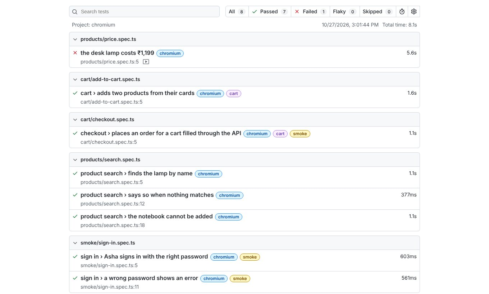
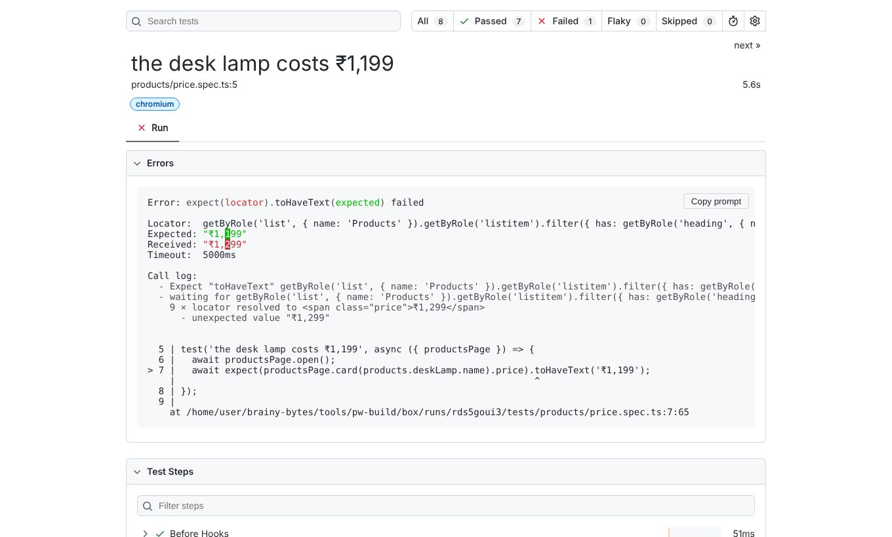
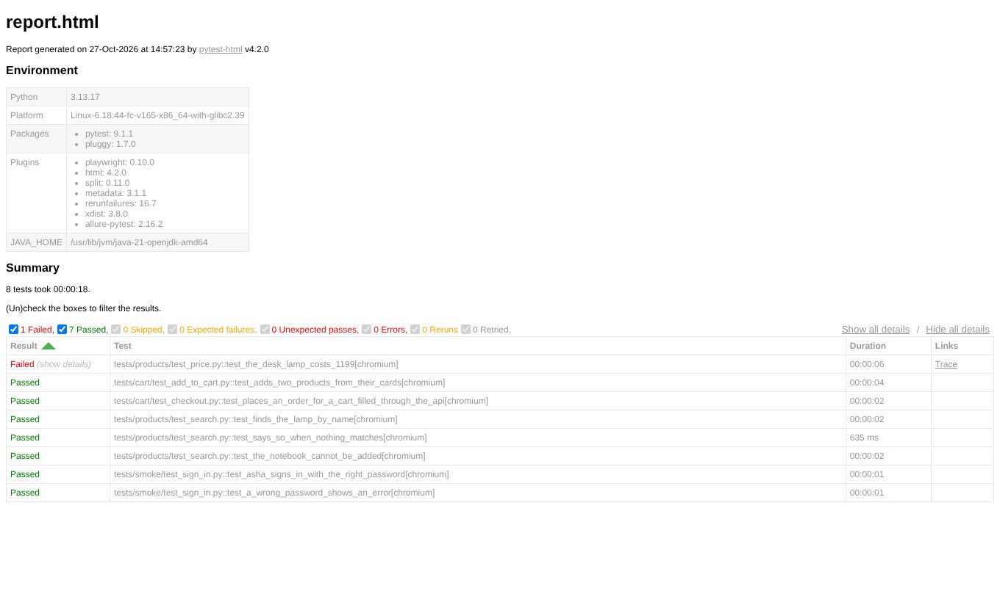
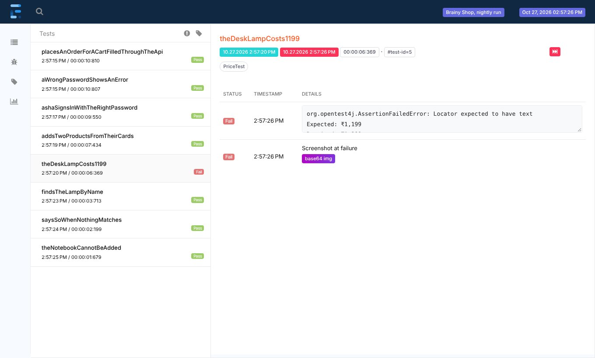
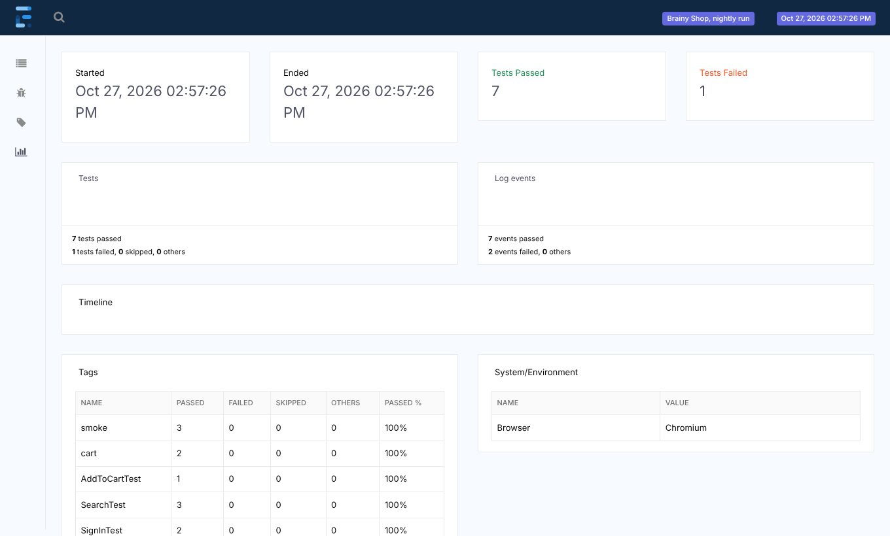
| Evidence | Playwright Test | pytest | Java with TestNG |
|---|---|---|---|
| screenshot at failure | use: { screenshot: 'only-on-failure' } | --screenshot only-on-failure | page.screenshot() in a listener |
| video | video: 'retain-on-failure' | --video retain-on-failure | setRecordVideoDir in the context options |
| trace | trace: 'on-first-retry' | --tracing retain-on-failure | context.tracing() in BaseTest |
| your own file | testInfo.attach() | allure.attach or a pytest-html extra | Allure.attachment or an Extent media entity |
Allure Report is a free, open source report that many companies use, because it looks the same for every language and test runner. Each runner writes raw results with a small adapter, and the Allure command line turns them into a report.
| Language | Adapter | Writes results with |
|---|---|---|
| TypeScript and JavaScript | allure-playwright (npm) | --reporter=allure-playwright |
| Python | allure-pytest (pip) | --alluredir=allure-results |
| Java with TestNG | io.qameta.allure:allure-testng (Maven) | nothing: it registers itself as a TestNG listener |
package com.brainy.shop.tests.products; import com.brainy.shop.base.BaseTest; import com.brainy.shop.data.Product; import io.qameta.allure.Allure; import io.qameta.allure.Feature; import io.qameta.allure.Severity; import io.qameta.allure.SeverityLevel; import org.testng.annotations.Test; import static com.microsoft.playwright.assertions.PlaywrightAssertions.assertThat; public class PriceTest extends BaseTest { // Out of date on purpose: the lamp now costs ₹1,299, so the reports have a failure to show @Test @Feature("Prices") @Severity(SeverityLevel.CRITICAL) public void theDeskLampCosts1199() { Allure.step("open the products page", () -> productsPage.open()); Allure.step("check the lamp price", () -> assertThat(productsPage.card(Product.DESK_LAMP.label).price).hasText("₹1,199")); } }
package com.brainy.shop.reporting; import com.brainy.shop.base.BaseTest; import io.qameta.allure.Allure; import io.qameta.allure.AttachmentOptions; import org.testng.ITestListener; import org.testng.ITestResult; import java.io.ByteArrayInputStream; // TestNG calls onTestFailure while the page is still open, so the screenshot shows the failure public class EvidenceListener implements ITestListener { @Override public void onTestFailure(ITestResult result) { if (result.getInstance() instanceof BaseTest test) { byte[] png = test.screenshot(); Allure.attachment("screenshot at failure", "image/png", new ByteArrayInputStream(png), AttachmentOptions.withFileExtension(".png")); } } }
allure.results.directory=target/allure-results
<project xmlns="http://maven.apache.org/POM/4.0.0"> <modelVersion>4.0.0</modelVersion> <groupId>com.brainy</groupId> <artifactId>shop-tests</artifactId> <version>1.0.0</version> <properties> <maven.compiler.release>21</maven.compiler.release> <project.build.sourceEncoding>UTF-8</project.build.sourceEncoding> <suite>testng.xml</suite> <!-- mvn test -Dsuite=testng-smoke.xml runs another suite --> </properties> <dependencies> <dependency> <groupId>com.microsoft.playwright</groupId> <artifactId>playwright</artifactId> <version>1.63.0</version> </dependency> <dependency> <groupId>org.testng</groupId> <artifactId>testng</artifactId> <version>7.11.0</version> <scope>test</scope> </dependency> <dependency> <groupId>io.qameta.allure</groupId> <artifactId>allure-testng</artifactId> <version>3.0.1</version> <scope>test</scope> </dependency> </dependencies> <build> <plugins> <plugin> <groupId>org.apache.maven.plugins</groupId> <artifactId>maven-surefire-plugin</artifactId> <version>3.5.4</version> <configuration> <suiteXmlFiles> <suiteXmlFile>${suite}</suiteXmlFile> </suiteXmlFiles> </configuration> </plugin> </plugins> </build> </project>
$ mvn test; npx allure generate target/allure-results && ls allure-report/index.html
[INFO] ------------------------------------------------------- [INFO] T E S T S [INFO] ------------------------------------------------------- [INFO] Running TestSuite [ERROR] Tests run: 8, Failures: 1, Errors: 0, Skipped: 0, Time elapsed: 13.42 s <<< FAILURE! -- in TestSuite [ERROR] com.brainy.shop.tests.products.PriceTest.theDeskLampCosts1199 -- Time elapsed: 1.607 s <<< FAILURE! org.opentest4j.AssertionFailedError: Locator expected to have text Expected: ₹1,199 Received: ₹1,299 [INFO] [INFO] Results: [INFO] [ERROR] Failures: [ERROR] PriceTest.theDeskLampCosts1199:20->lambda$theDeskLampCosts1199$1:21 Locator expected to have text Expected: ₹1,199 Received: ₹1,299 [INFO] [ERROR] Tests run: 8, Failures: 1, Errors: 0, Skipped: 0 [INFO] [INFO] ------------------------------------------------------------------------ [INFO] BUILD FAILURE allure-report/index.html
import allure from playwright.sync_api import expect from framework.data.products import DESK_LAMP from framework.pages.products_page import ProductsPage # Out of date on purpose: the lamp now costs ₹1,299, so the reports have a failure to show @allure.feature("Prices") @allure.severity(allure.severity_level.CRITICAL) def test_the_desk_lamp_costs_1199(products_page: ProductsPage): with allure.step("open the products page"): products_page.open() with allure.step("check the lamp price"): expect(products_page.card(DESK_LAMP.name).price).to_have_text("₹1,199")
import allure import pytest # After each test: when it failed, attach a screenshot of the page to the Allure results. # pytest-playwright already puts its own screenshot and trace into pytest-html. @pytest.hookimpl(hookwrapper=True) def pytest_runtest_makereport(item, call): outcome = yield report = outcome.get_result() page = item.funcargs.get("page") if report.when == "call" and report.failed and page: allure.attach(page.screenshot(), name="screenshot at failure", attachment_type=allure.attachment_type.PNG)
$ pytest -q --tb=line --alluredir=allure-results; npx allure generate allure-results && ls allure-report/index.html
..F..... [100%]
=================================== FAILURES ===================================
E AssertionError: Locator expected to have text '₹1,199'
Actual value: ₹1,299
Call log:
- Expect "to_have_text" get_by_role("list", name="Products").get_by_role("listitem").filter(has=get_by_role("heading", name="Desk lamp")).locator(".price") with timeout 5000ms
- waiting for get_by_role("list", name="Products").get_by_role("listitem").filter(has=get_by_role("heading", name="Desk lamp")).locator(".price")
8 × locator resolved to <span class="price">₹1,299</span>
- unexpected value "₹1,299"
Aria snapshot:
- text: ₹1,299
tests/products/test_price.py:15: AssertionError: Locator expected to have text '₹1,199'
=========================== short test summary info ============================
FAILED tests/products/test_price.py::test_the_desk_lamp_costs_1199[chromium] - AssertionError: Locator expected to have text '₹1,199'
1 failed, 7 passed in 16.74s
allure-report/index.htmlimport * as allure from 'allure-js-commons'; import { test, expect } from '../../src/fixtures/index.js'; import { products } from '../../src/data/products.js'; // Out of date on purpose: the lamp now costs ₹1,299, so the reports have a failure to show test('the desk lamp costs ₹1,199', async ({ productsPage }) => { await allure.feature('Prices'); await allure.severity('critical'); await test.step('open the products page', async () => { await productsPage.open(); }); await test.step('check the lamp price', async () => { await expect(productsPage.card(products.deskLamp.name).price).toHaveText('₹1,199'); }); });
$ npx playwright test --reporter=line,allure-playwright; npx allure generate allure-results && ls allure-report/index.html
Running 8 tests using 2 workers
[1/8] [chromium] › tests/cart/add-to-cart.spec.js:5:3 › cart › adds two products from their cards @cart
[2/8] [chromium] › tests/cart/checkout.spec.js:5:3 › checkout › places an order for a cart filled through the API @cart @smoke
[3/8] [chromium] › tests/products/price.spec.js:6:1 › the desk lamp costs ₹1,199
[4/8] [chromium] › tests/products/search.spec.js:5:3 › product search › finds the lamp by name
[5/8] [chromium] › tests/products/search.spec.js:12:3 › product search › says so when nothing matches
[6/8] [chromium] › tests/products/search.spec.js:18:3 › product search › the notebook cannot be added
[7/8] [chromium] › tests/smoke/sign-in.spec.js:5:3 › sign in › Asha signs in with the right password @smoke
[8/8] [chromium] › tests/smoke/sign-in.spec.js:11:3 › sign in › a wrong password shows an error @smoke
1) [chromium] › tests/products/price.spec.js:6:1 › the desk lamp costs ₹1,199 › check the lamp price
Error: expect(locator).toHaveText(expected) failed
Locator: getByRole('list', { name: 'Products' }).getByRole('listitem').filter({ has: getByRole('heading', { name: 'Desk lamp' }) }).locator('.price')
Expected: "₹1,199"
Received: "₹1,299"
Timeout: 5000ms
at tests/products/price.spec.js:13:67
at tests/products/price.spec.js:12:3
attachment #3: screenshot (image/png) ──────────────────────────────────────────────────────────
test-results/products-price-the-desk-lamp-costs-₹1-199-chromium/test-failed-1.png
────────────────────────────────────────────────────────────────────────────────────────────────
attachment #4: video (video/webm) ──────────────────────────────────────────────────────────────
test-results/products-price-the-desk-lamp-costs-₹1-199-chromium/video.webm
────────────────────────────────────────────────────────────────────────────────────────────────
1 failed
[chromium] › tests/products/price.spec.js:6:1 › the desk lamp costs ₹1,199 ─────────────────────
7 passed (10.2s)
allure-report/index.htmlimport * as allure from 'allure-js-commons'; import { test, expect } from '../../src/fixtures/index'; import { products } from '../../src/data/products'; // Out of date on purpose: the lamp now costs ₹1,299, so the reports have a failure to show test('the desk lamp costs ₹1,199', async ({ productsPage }) => { await allure.feature('Prices'); await allure.severity('critical'); await test.step('open the products page', async () => { await productsPage.open(); }); await test.step('check the lamp price', async () => { await expect(productsPage.card(products.deskLamp.name).price).toHaveText('₹1,199'); }); });
$ npx playwright test --reporter=line,allure-playwright; npx allure generate allure-results && ls allure-report/index.html
Running 8 tests using 2 workers
[1/8] [chromium] › tests/cart/checkout.spec.ts:5:3 › checkout › places an order for a cart filled through the API @cart @smoke
[2/8] [chromium] › tests/cart/add-to-cart.spec.ts:5:3 › cart › adds two products from their cards @cart
[3/8] [chromium] › tests/products/price.spec.ts:6:1 › the desk lamp costs ₹1,199
[4/8] [chromium] › tests/products/search.spec.ts:5:3 › product search › finds the lamp by name
[5/8] [chromium] › tests/products/search.spec.ts:12:3 › product search › says so when nothing matches
[6/8] [chromium] › tests/products/search.spec.ts:18:3 › product search › the notebook cannot be added
[7/8] [chromium] › tests/smoke/sign-in.spec.ts:5:3 › sign in › Asha signs in with the right password @smoke
[8/8] [chromium] › tests/smoke/sign-in.spec.ts:11:3 › sign in › a wrong password shows an error @smoke
1) [chromium] › tests/products/price.spec.ts:6:1 › the desk lamp costs ₹1,199 › check the lamp price
Error: expect(locator).toHaveText(expected) failed
Locator: getByRole('list', { name: 'Products' }).getByRole('listitem').filter({ has: getByRole('heading', { name: 'Desk lamp' }) }).locator('.price')
Expected: "₹1,199"
Received: "₹1,299"
Timeout: 5000ms
at tests/products/price.spec.ts:13:67
at tests/products/price.spec.ts:12:3
attachment #3: screenshot (image/png) ──────────────────────────────────────────────────────────
test-results/products-price-the-desk-lamp-costs-₹1-199-chromium/test-failed-1.png
────────────────────────────────────────────────────────────────────────────────────────────────
attachment #4: video (video/webm) ──────────────────────────────────────────────────────────────
test-results/products-price-the-desk-lamp-costs-₹1-199-chromium/video.webm
────────────────────────────────────────────────────────────────────────────────────────────────
1 failed
[chromium] › tests/products/price.spec.ts:6:1 › the desk lamp costs ₹1,199 ─────────────────────
7 passed (10.0s)
allure-report/index.htmlEach language wrote raw results into an allure-results folder: allure-playwright for Playwright Test, allure-pytest for pytest and allure-testng for TestNG. The same Allure command line then built the same kind of report from them. The labels and steps in the test show up as severity, feature and a step list, and the failure carries its screenshot.
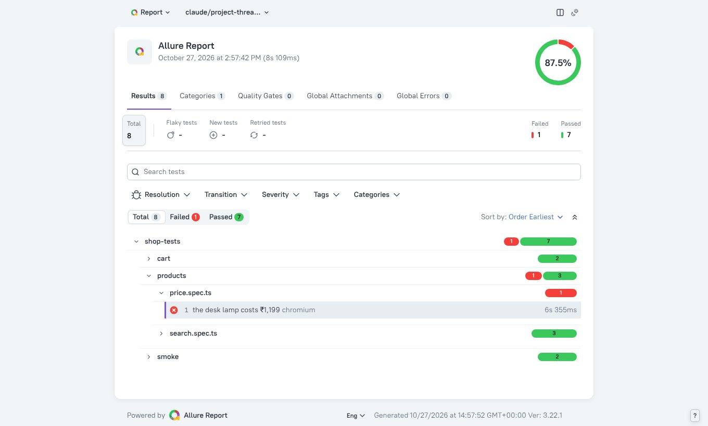
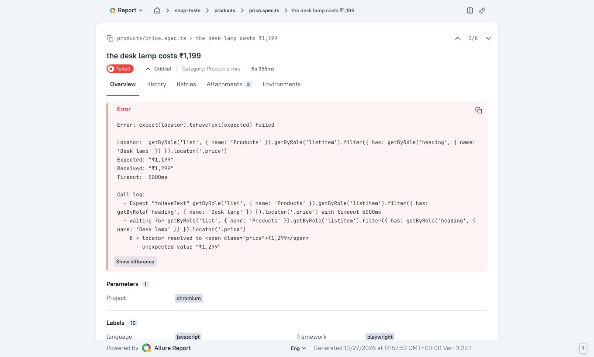
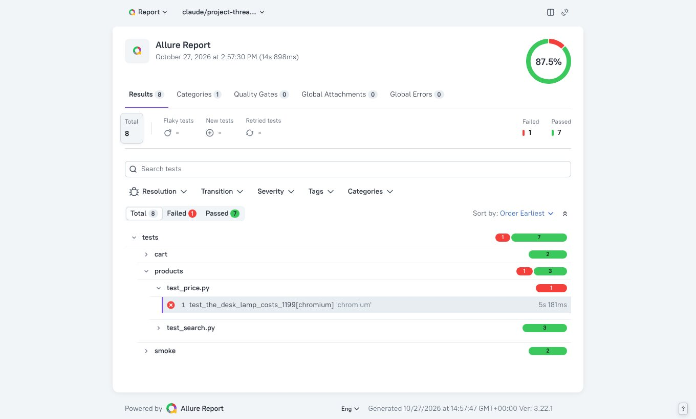
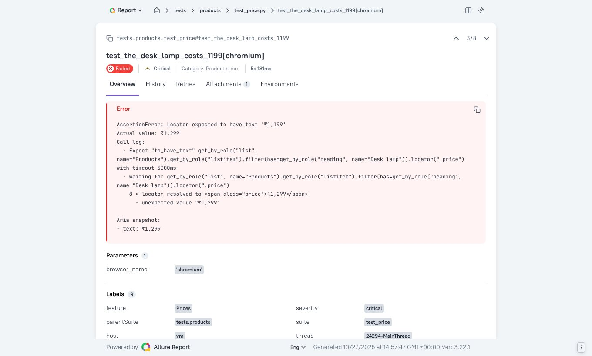
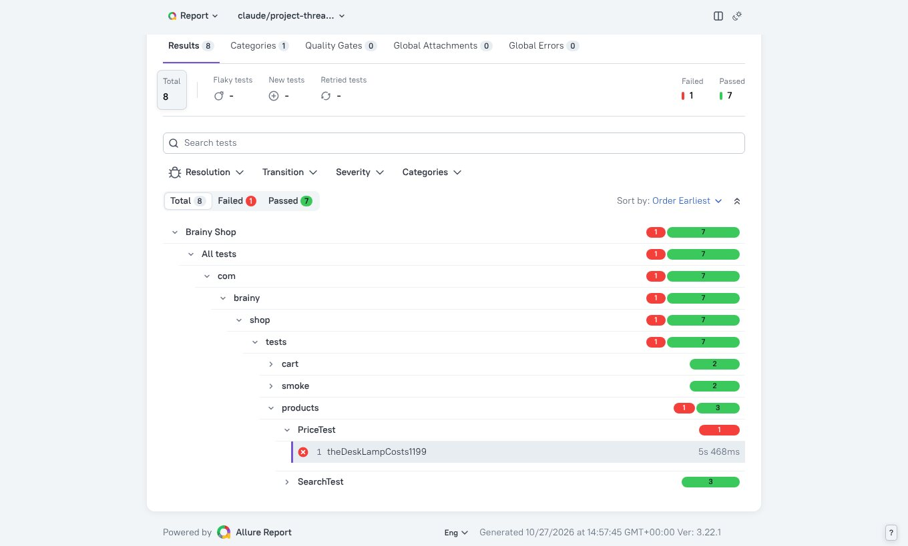
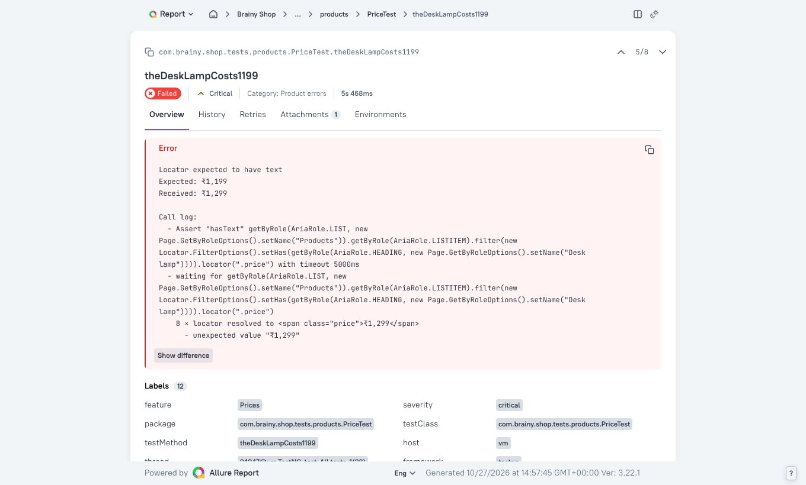
npx allure generate allure-results. Allure Report 2 is a Java program installed separately, with the command allure generate. Both read the same allure-results folder.Sometimes a team wants something no reporter gives: a message in a chat channel, a row in a dashboard, or a list of failed tests in a fixed format. Every runner lets you write your own reporter.
package com.brainy.shop.reporting; import org.testng.ITestContext; import org.testng.ITestListener; import org.testng.ITestResult; // One line per test, then a short summary when the run ends public class SummaryListener implements ITestListener { @Override public void onTestSuccess(ITestResult result) { line("PASS", result); } @Override public void onTestFailure(ITestResult result) { line("FAIL", result); } @Override public void onTestSkipped(ITestResult result) { line("SKIP", result); } @Override public void onFinish(ITestContext context) { System.out.printf("%d passed, %d failed, %d skipped%n", context.getPassedTests().size(), context.getFailedTests().size(), context.getSkippedTests().size()); context.getFailedTests().getAllResults() .forEach(r -> System.out.println(" to look at: " + r.getMethod().getMethodName())); } private void line(String status, ITestResult r) { double seconds = (r.getEndMillis() - r.getStartMillis()) / 1000.0; System.out.printf("%s %s (%.1f s)%n", status, r.getMethod().getMethodName(), seconds); } }
<!DOCTYPE suite SYSTEM "https://testng.org/testng-1.0.dtd"> <!-- Every test, two classes at a time. Each class gets its own browser on its own thread. --> <suite name="Brainy Shop" parallel="classes" thread-count="2"> <listeners> <listener class-name="com.brainy.shop.reporting.SummaryListener"/> </listeners> <test name="All tests"> <packages> <package name="com.brainy.shop.tests.*"/> </packages> </test> </suite>
$ mvn test; echo "exit code $?"
[INFO] ------------------------------------------------------- [INFO] T E S T S [INFO] ------------------------------------------------------- [INFO] Running TestSuite PASS aWrongPasswordShowsAnError (0.5 s) PASS placesAnOrderForACartFilledThroughTheApi (0.9 s) PASS ashaSignsInWithTheRightPassword (0.5 s) PASS addsTwoProductsFromTheirCards (1.4 s) PASS findsTheLampByName (1.1 s) PASS saysSoWhenNothingMatches (0.1 s) PASS theNotebookCannotBeAdded (1.0 s) FAIL theDeskLampCosts1199 (5.1 s) 7 passed, 1 failed, 0 skipped to look at: theDeskLampCosts1199 [ERROR] Tests run: 8, Failures: 1, Errors: 0, Skipped: 0, Time elapsed: 9.568 s <<< FAILURE! -- in TestSuite [ERROR] com.brainy.shop.tests.products.PriceTest.theDeskLampCosts1199 -- Time elapsed: 1.996 s <<< FAILURE! org.opentest4j.AssertionFailedError: Locator expected to have text Expected: ₹1,199 Received: ₹1,299 [INFO] [INFO] Results: [INFO] [ERROR] Failures: [ERROR] PriceTest.theDeskLampCosts1199:14 Locator expected to have text Expected: ₹1,199 Received: ₹1,299 [INFO] [ERROR] Tests run: 8, Failures: 1, Errors: 0, Skipped: 0 [INFO] [INFO] ------------------------------------------------------------------------ [INFO] BUILD FAILURE exit code 1
import pytest results = [] # pytest reports each test three times: setup, call and teardown. The call holds the result, # and a failure while setting up is reported in the setup instead. def pytest_runtest_logreport(report): if report.when == "call" or (report.when == "setup" and not report.passed): results.append(report) def pytest_terminal_summary(terminalreporter): tr = terminalreporter tr.section("shop summary") for r in results: name = r.nodeid.split("::")[-1] tr.write_line(f"{'PASS' if r.passed else 'FAIL'} {name} ({r.duration:.1f} s)") failed = [r.nodeid.split("::")[-1] for r in results if r.failed] tr.write_line(f"{len(results) - len(failed)} passed, {len(failed)} failed") for name in failed: tr.write_line(f" to look at: {name}")
$ pytest -q --tb=no -p framework.reporting.summary; echo "exit code $?"
..F..... [100%] ================================= shop summary ================================= PASS test_adds_two_products_from_their_cards[chromium] (1.3 s) PASS test_places_an_order_for_a_cart_filled_through_the_api[chromium] (0.6 s) FAIL test_the_desk_lamp_costs_1199[chromium] (5.1 s) PASS test_finds_the_lamp_by_name[chromium] (1.0 s) PASS test_says_so_when_nothing_matches[chromium] (0.2 s) PASS test_the_notebook_cannot_be_added[chromium] (0.9 s) PASS test_asha_signs_in_with_the_right_password[chromium] (0.4 s) PASS test_a_wrong_password_shows_an_error[chromium] (0.4 s) 7 passed, 1 failed to look at: test_the_desk_lamp_costs_1199[chromium] =========================== short test summary info ============================ FAILED tests/products/test_price.py::test_the_desk_lamp_costs_1199[chromium] - AssertionError: Locator expected to have text '₹1,199' 1 failed, 7 passed in 12.82s exit code 1
// One line per test, then a short summary that a team could also send to chat or a dashboard export default class SummaryReporter { passed = 0; failed = []; onBegin(config, suite) { console.log(`Starting ${suite.allTests().length} tests on ${config.workers} workers`); } onTestEnd(test, result) { const seconds = (result.duration / 1000).toFixed(1); if (result.status === 'passed') { this.passed++; console.log(`PASS ${test.title} (${seconds} s)`); } else { this.failed.push(test.title); console.log(`FAIL ${test.title} (${seconds} s)`); } } onEnd(result) { console.log(`${this.passed} passed, ${this.failed.length} failed, run ${result.status}`); for (const title of this.failed) console.log(` to look at: ${title}`); } }
$ npx playwright test --reporter=./reporters/summary-reporter.js; echo "exit code $?"
Starting 8 tests on 2 workers PASS places an order for a cart filled through the API (1.2 s) PASS adds two products from their cards (2.0 s) PASS finds the lamp by name (1.5 s) PASS says so when nothing matches (0.5 s) PASS the notebook cannot be added (1.4 s) PASS Asha signs in with the right password (1.1 s) FAIL the desk lamp costs ₹1,199 (6.0 s) PASS a wrong password shows an error (0.8 s) 7 passed, 1 failed, run failed to look at: the desk lamp costs ₹1,199 exit code 1
import type { FullConfig, FullResult, Reporter, Suite, TestCase, TestResult } from '@playwright/test/reporter'; // One line per test, then a short summary that a team could also send to chat or a dashboard export default class SummaryReporter implements Reporter { private passed = 0; private failed: string[] = []; onBegin(config: FullConfig, suite: Suite) { console.log(`Starting ${suite.allTests().length} tests on ${config.workers} workers`); } onTestEnd(test: TestCase, result: TestResult) { const seconds = (result.duration / 1000).toFixed(1); if (result.status === 'passed') { this.passed++; console.log(`PASS ${test.title} (${seconds} s)`); } else { this.failed.push(test.title); console.log(`FAIL ${test.title} (${seconds} s)`); } } onEnd(result: FullResult) { console.log(`${this.passed} passed, ${this.failed.length} failed, run ${result.status}`); for (const title of this.failed) console.log(` to look at: ${title}`); } }
$ npx playwright test --reporter=./reporters/summary-reporter.ts; echo "exit code $?"
Starting 8 tests on 2 workers PASS places an order for a cart filled through the API (1.6 s) PASS adds two products from their cards (2.4 s) PASS finds the lamp by name (1.5 s) PASS says so when nothing matches (0.5 s) PASS the notebook cannot be added (1.7 s) PASS Asha signs in with the right password (1.0 s) FAIL the desk lamp costs ₹1,199 (6.2 s) PASS a wrong password shows an error (0.8 s) 7 passed, 1 failed, run failed to look at: the desk lamp costs ₹1,199 exit code 1
A reporter is a class or a set of hooks that the runner calls as the run goes: once at the start, once per finished test and once at the end. Playwright Test calls onBegin, onTestEnd and onEnd. pytest calls pytest_runtest_logreport for every phase and pytest_terminal_summary at the end. TestNG calls ITestListener methods. The run still fails with exit code 1, so CI marks it red whatever the reporter prints.
| Playwright Test | pytest | TestNG | |
|---|---|---|---|
| at the start | onBegin(config, suite) | pytest_sessionstart | onStart(context) |
| after each test | onTestEnd(test, result) | pytest_runtest_logreport(report) | onTestSuccess, onTestFailure, onTestSkipped |
| at the end | onEnd(result) | pytest_terminal_summary | onFinish(context), or IReporter.generateReport |
| turn it on | --reporter=./my-reporter.ts or the config | -p module, or code in conftest.py | a listener in testng.xml |
With shards, each machine has only part of the results. Merge them into one report, then publish it where the team looks.
import { test, expect } from '../../src/fixtures/index'; import { products } from '../../src/data/products'; // Out of date on purpose: the lamp now costs ₹1,299, so the reports have a failure to show test('the desk lamp costs ₹1,199', async ({ productsPage }) => { await productsPage.open(); await expect(productsPage.card(products.deskLamp.name).price).toHaveText('₹1,199'); });
$ for i in 1 2; do npx playwright test --shard=$i/2 --reporter=blob; mkdir -p all-blob-reports; mv blob-report/*.zip all-blob-reports/; done; npx playwright merge-reports --reporter=html ./all-blob-reports; ls playwright-report
Running 4 tests using 2 workers, shard 1 of 2
[1/4] [chromium] › tests/cart/add-to-cart.spec.ts:5:3 › cart › adds two products from their cards @cart
[2/4] [chromium] › tests/cart/checkout.spec.ts:5:3 › checkout › places an order for a cart filled through the API @cart @smoke
[3/4] [chromium] › tests/products/price.spec.ts:5:1 › the desk lamp costs ₹1,199
[4/4] [chromium] › tests/products/search.spec.ts:5:3 › product search › finds the lamp by name
1) [chromium] › tests/products/price.spec.ts:5:1 › the desk lamp costs ₹1,199 ────────────────────
Error: expect(locator).toHaveText(expected) failed
Locator: getByRole('list', { name: 'Products' }).getByRole('listitem').filter({ has: getByRole('heading', { name: 'Desk lamp' }) }).locator('.price')
Expected: "₹1,199"
Received: "₹1,299"
Timeout: 5000ms
at tests/products/price.spec.ts:7:65
attachment #1: screenshot (image/png) ──────────────────────────────────────────────────────────
test-results/products-price-the-desk-lamp-costs-₹1-199-chromium/test-failed-1.png
────────────────────────────────────────────────────────────────────────────────────────────────
attachment #2: video (video/webm) ──────────────────────────────────────────────────────────────
test-results/products-price-the-desk-lamp-costs-₹1-199-chromium/video.webm
────────────────────────────────────────────────────────────────────────────────────────────────
1 failed
[chromium] › tests/products/price.spec.ts:5:1 › the desk lamp costs ₹1,199 ─────────────────────
3 passed (10.6s)
Running 4 tests using 2 workers, shard 2 of 2
[1/4] [chromium] › tests/products/search.spec.ts:18:3 › product search › the notebook cannot be added
[2/4] [chromium] › tests/products/search.spec.ts:12:3 › product search › says so when nothing matches
[3/4] [chromium] › tests/smoke/sign-in.spec.ts:5:3 › sign in › Asha signs in with the right password @smoke
[4/4] [chromium] › tests/smoke/sign-in.spec.ts:11:3 › sign in › a wrong password shows an error @smoke
4 passed (4.9s)
merging reports from all-blob-reports
extracting: all-blob-reports/report-1.zip
extracting: all-blob-reports/report-2.zip
merging events
processing test events
building final report
finished building report
data
index.htmlTwo shards each wrote a blob report, and merge-reports built one HTML report from both: the same playwright-report folder a single run makes, with all eight tests and the failure from shard 1. This is the last job of the sharded workflow in the CI/CD chapter.
| Where | How |
|---|---|
| GitHub Actions | upload the report folder as an artifact, or publish it to GitHub Pages |
| Jenkins | the junit step for counts and history, and the HTML Publisher or Allure plugin for the page |
| GitLab CI | artifacts: reports: junit, and the report folder as an artifact or GitLab Pages |
| Azure DevOps | PublishTestResults for JUnit XML, and PublishPipelineArtifact for the HTML |
Most teams combine a few. Here is a starting point that suits most projects.
| Need | TypeScript and JavaScript | Python | Java |
|---|---|---|---|
| CI counts | junit reporter | --junitxml | Surefire XML, already there |
| debugging a failure | the built-in HTML report with traces | pytest-html with traces from pytest-playwright | traces from BaseTest, plus Extent or Allure |
| one report for many languages and teams | Allure | Allure | Allure |
| a report managers know from older Java projects | ExtentReports | ||
| something special | a custom reporter | hooks in a plugin | a listener |
📖 Every API, option and command on this page was checked against the official Playwright documentation and release notes (version 1.64, October 2026). Every example was run with Playwright 1.63 in Chromium when the page was built, and the output shown is what it printed.